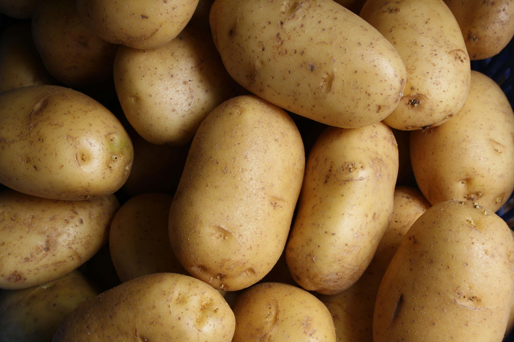
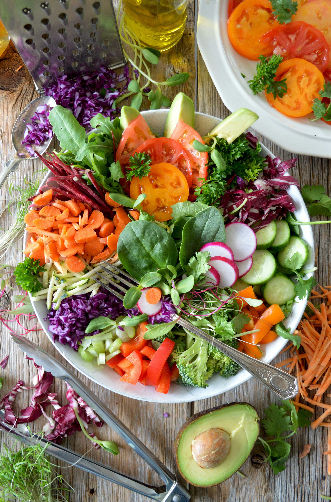

-
에코바이트, 신품종 감자 특허 획득…지속가능한 미래 식품 선도
건강한 식문화를 선도하는 에코바이트(EcoBites)가 최근 자체 개발한 신품종 감자에 대한 특허를 공식 취득했다고 5일 밝혔다. 이번 신품종은 기존 감자 대비 영양 성분이 더욱 풍부하고, 병해충에 강하며, 친환경 재배에 최적화된 것이 특징이다.
에코바이트, 신품종 감자 특허 획득…지속가능한 미래 식품 선도
건강한 식문화를 선도하는 에코바이트(EcoBites)가 최근 자체 개발한 신품종 감자에 대한 특허를 공식 취득했다고 5일 밝혔다. 이번 신품종은 기존 감자 대비 영양 성분이 더욱 풍부하고, 병해충에 강하며, 친환경 재배에 최적화된 것이 특징이다.
에코바이트 연구진은 수년간의 교배와 선별 과정을 거쳐, 고품질의 맛과 식감을 유지하면서도 생산성과 저장성을 크게 높인 새로운 감자 품종 개발에 성공했다. 특히, 이 품종은 저탄소 농법과 유기농 재배에도 적합해 지속가능한 농업 실현에 한 걸음 더 다가섰다는 평가를 받고 있다.
에코바이트 관계자는 “이번 특허 획득은 건강과 환경을 모두 생각하는 에코바이트의 R&D 역량을 보여주는 성과”라며 “앞으로도 혁신적인 식품 개발로 모두의 건강한 식탁을 만들어가겠다”고 밝혔다.
이번 신품종 감자는 향후 에코바이트의 다양한 건강식 제품에 활용될 예정이며, 국내외 시장 진출도 적극 추진할 계획이다. -
 에코바이트사의 도그푸드 흥행 성공기
에코바이트사의 도그푸드 흥행 성공기최근 에코바이트사의 도그푸드가 SNS에서 폭발적인 인기를 끌고 있다.
에코바이트사의 도그푸드 흥행 성공기
최근 에코바이트사의 도그푸드가 SNS에서 폭발적인 인기를 끌고 있다.
신선한 원료와 친환경 제조 공정, 그리고 반려견의 건강을 최우선으로 한 레시피가 입소문을 타며, 많은 소비자와 반려견 커뮤니티에서 화제가 되고 있다.
에코바이트는 업사이클링 채소 펄프와 지속가능한 단백질 등 차별화된 원료를 사용해 환경 보호와 영양을 모두 잡았다는 평가를 받고 있다.
이 유행의 중심에서 에코바이트는 트렌드에 민감한 소비자와 소통하며, 건강한 반려동물 문화를 선도하고 있다. -
 에코바이트의 특별한 복지
에코바이트의 특별한 복지에코바이트는 임직원의 행복과 성장을 위해 다양한 특별 복지 제도를 운영하고 있다.
에코바이트는 임직원의 행복과 성장을 위해 다양한 특별 복지 제도를 운영하고 있다.
에코바이트는 임직원의 행복과 성장을 위해 다양한 특별 복지 제도를 운영하고 있다.
유연근무제와 재택근무, 건강검진 및 심리상담 지원, 친환경 사내 식당 운영 등 직원들의 웰빙을 위한 복지가 마련되어 있다. 또한, 지역 농가와 연계한 신선식품 제공, 가족 돌봄 휴가 등 사회적 가치 실현에도 앞장서고 있다.
에코바이트만의 차별화된 복지는 임직원 만족도를 높이고, 건강한 기업문화를 만들어가고 있다. -
건강한 음식이 몸을 건강하게 한다
에코바이트와 함께 건강한 자연식이 인체에 미치는 영향을 조사...
건강한 음식이 몸을 건강하게 한다
에코바이트와 함께 건강한 자연식이 인체에 미치는 영향을 조사한 결과, 신선한 채소와 과일, 가공되지 않은 식품이 면역력 증진과 만성질환 예방에 긍정적인 효과를 주는 것으로 나타났다.
실제로 에코바이트의 식단을 경험한 고객들은 에너지 증가, 소화 개선, 전반적인 건강 상태 향상을 체감하고 있다.
전문가들은 "진짜 음식이 건강을 지킨다"며, 에코바이트의 철학이 현대인들에게 꼭 필요한 변화임을 강조했다. -
에코바이트사 단기 수출액 N억 흑자 달성
에코바이트사가 최근 SNS에서의 인기에 힘입어 해외 시장에 빠르게 진출, 대한민국 식품업계 최단기 N억 원 흑자 수출을 달성했다.
에코바이트사 단기 수출액 N억 흑자 달성
에코바이트사가 최근 SNS에서의 인기에 힘입어 해외 시장에 빠르게 진출, 대한민국 식품업계 최단기 N억 원 흑자 수출을 달성했다.
친환경 원료와 혁신적인 제품력, 그리고 글로벌 트렌드에 맞춘 마케팅 전략이 주효했다는 평가다.
에코바이트는 앞으로도 지속적으로 해외 시장을 확대하며, K-푸드의 새로운 가능성을 열어가겠다는 포부를 밝혔다. -
 에코바이트만의 특별한 작물 재배법
에코바이트만의 특별한 작물 재배법에코바이트는 친환경 농법과 첨단 기술을 결합한 독자적인 재배법을 도입하여, 영양이 풍부하고 안전한 작물을 생산하고 있다.
에코바이트만의 특별한 작물 재배법
에코바이트는 친환경 농법과 첨단 기술을 결합한 독자적인 재배법을 도입하여, 영양이 풍부하고 안전한 작물을 생산하고 있다.
수경재배, 스마트팜, 다품종 순환재배 등 다양한 혁신 기술을 활용해 토양과 수자원을 보호하며, 소비자에게 합리적인 가격으로 고품질 식품을 제공한다.
이러한 노력이 에코바이트 제품의 신뢰도와 경쟁력을 높이고 있다. -
 쓸거없어서 놔둠
쓸거없어서 놔둠...
쓸게없다
...